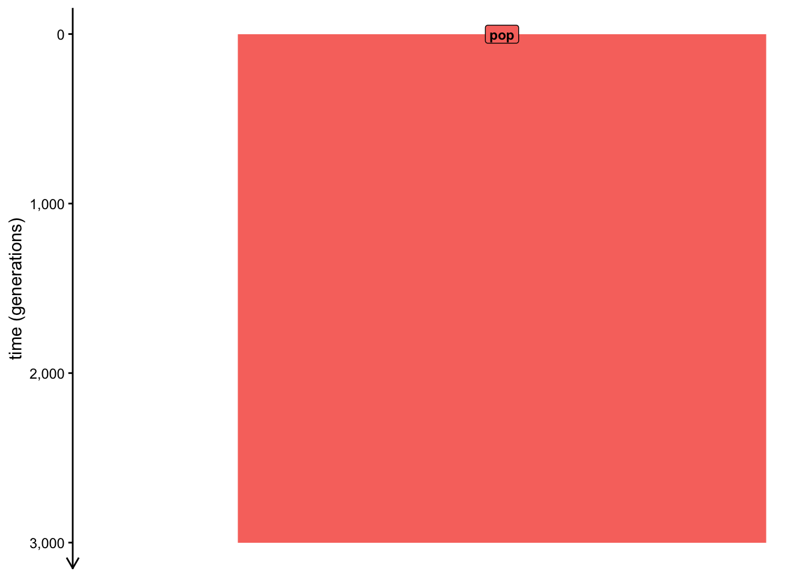
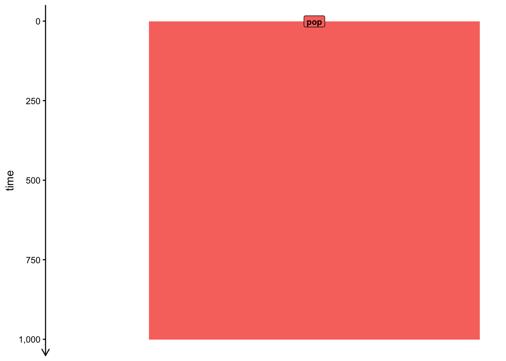
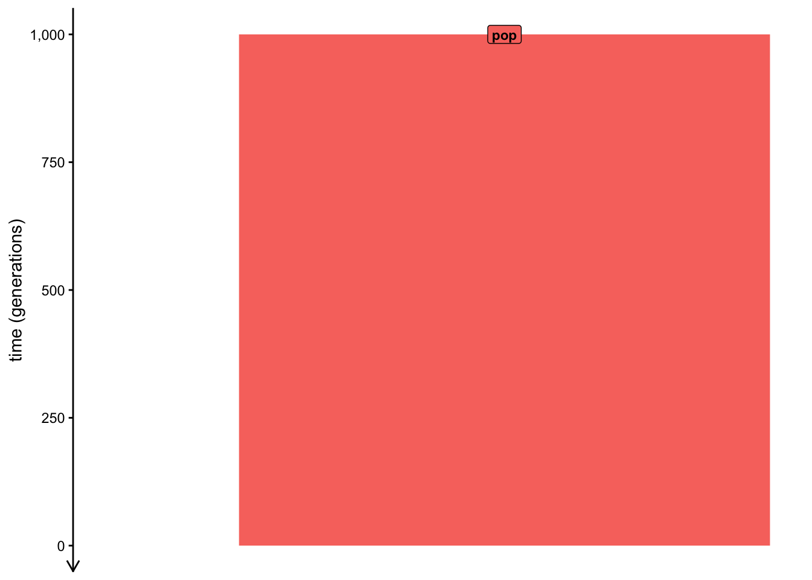
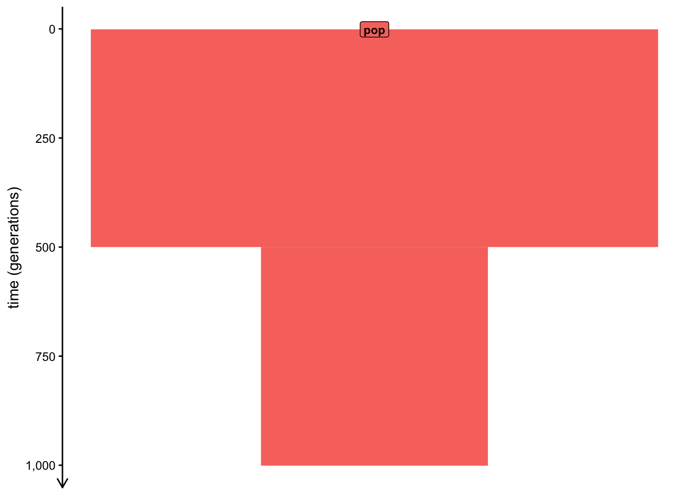
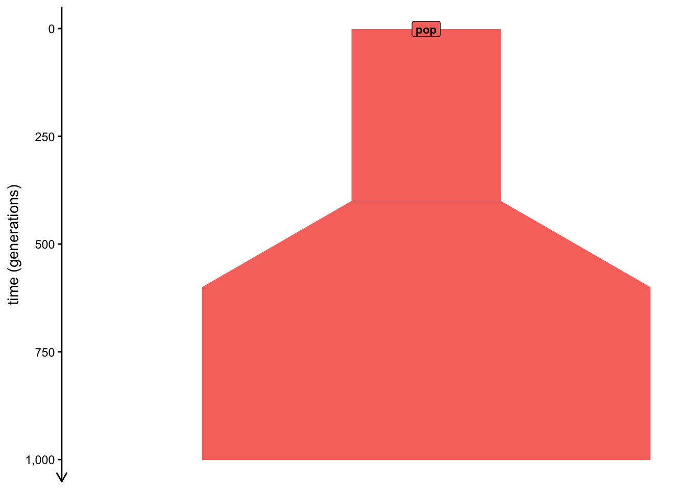

library(slendr)Warning: package 'slendr' was built under R version 4.6.1init_env()Python virtual environment for slendr has been activated.library(slendr)Warning: package 'slendr' was built under R version 4.6.1init_env()Python virtual environment for slendr has been activated.Let’s start with the simplest possible slendr simulation possible—a simulation of the demographic history of a single population.
First, create an R variable pop containing a slendr population (using the population() function) with the name “pop”, at time 1 and a size N of 5000.
Note: At this moment, the time value has a completely arbitrary unit to be determined later. Additionally, unless otherwise specified, the size N will always indicate the “effective population size” \(N_e\).
Execute your code which stores the population in the pop variable, then type out pop in your R console. What does the summary report back to you?
pop <- population("pop", time = 1, N = 5000)print(pop)slendr 'population' object
--------------------------
name: pop
non-spatial population
stays until the end of the simulation
population history overview:
- time 1: created as an ancestral population (N = 5000)model <- compile_model(
populations = pop,
generation_time = 1,
direction = "forward",
simulation_length = 3000
)print(model)slendr 'model' object
---------------------
populations: pop
geneflow events: [no geneflow]
generation time: 1
time direction: forward
time units: generations
total running length: 3000 time units
model type: non-spatial
configuration files in: /private/var/folders/7f/n68ck8q969z_d628zqqnl4ch0000gn/T/RtmpQEGJuJ/filec413635b6005_slendr_model plot_model(model)
model <- compile_model(
populations = pop,
generation_time = 30,
direction = "forward",
simulation_length = 1000
)print(model)slendr 'model' object
---------------------
populations: pop
geneflow events: [no geneflow]
generation time: 30
time direction: forward
time units:
total running length: 1000 time units
model type: non-spatial
configuration files in: /private/var/folders/7f/n68ck8q969z_d628zqqnl4ch0000gn/T/RtmpQEGJuJ/filec413721632b_slendr_model plot_model(model)
It’s very easy to undestand models specified in time units going forward. However, in many practical situation in population genomics (and especially whenever we deal with ancient DNA samples), times of events specified in units such as “years before the present” are much easier to program, read, and interpret.
For instance, if we want to simulate a split of a lineage of anatomically modern humans from their chimpanzee relatives, it’s much easier to say that it probably happened around six million years ago looking “backwards in time” and assuming that “present day” is counted at time 0, rather than having to recalculate all of these times now only into generations but also into generations going “forward” starting from a hypothetical time of 1 sometime in the past (like we did in the very first simulation above).
pop <- population("pop", time = 1000, N = 5000)print(pop)slendr 'population' object
--------------------------
name: pop
non-spatial population
stays until the end of the simulation
population history overview:
- time 1000: created as an ancestral population (N = 5000)model <- compile_model(
populations = pop,
generation_time = 1,
direction = "backward"
)print(model)slendr 'model' object
---------------------
populations: pop
geneflow events: [no geneflow]
generation time: 1
time direction: backward
time units: generations
total running length: 1000 time units
model type: non-spatial
configuration files in: /private/var/folders/7f/n68ck8q969z_d628zqqnl4ch0000gn/T/RtmpQEGJuJ/filec413522273bb_slendr_model plot_model(model)
pop <- population("pop", time = 1, N = 5000) %>% resize(N = 2000, time = 500, how = "step")model <- compile_model(populations = pop, generation_time = 1, direction = "forward", simulation_length = 1000)
plot_model(model)
pop <- population("pop", time = 1, N = 5000) %>% resize(N = 15000, time = 400, end = 600, how = "exponential")model <- compile_model(populations = pop, generation_time = 1, direction = "forward", simulation_length = 1000)
plot_model(model)
Of course, real-world populations don’t just split from one another or change their size. A very common demographic process is gene flow (also called admixture or introgression in various context and different species).
Use the function gene_flow() to program admixture from population “p1” into population “p2” at starting at time 100, with an end at time 200. Set the total proportion of “p1” ancestry in “p2” at 0.2 (i.e., 20% of the final “p2” population will be derived from “p1”).
p1 <- population("p1", time = 1, N = 5000) %>% resize(N = 15000, time = 400, end = 600, how = "exponential")
p2 <- population("p2", time = 1, N = 5000) %>% resize(N = 15000, time = 400, end = 600, how = "exponential")model <- compile_model(populations = pop, generation_time = 1, direction = "forward", simulation_length = 1000)
plot_model(model)
When you look at ?gene_flow help page, you see that the function has a rate argument too. What does it do? Is there any way to get the same result (i.e., to encode the same gene-flow event) as you did just above, but using rate instead of proportion? When would you expect to use one or the other?
A very important part of slendr’s approach to modeling is to make simple things be trivially easy. This is largely why expressing even relatively complex models with slendr requires so little code compared to the amount of programming needed with traditional powerful simulators such as msprime and SLiM, something you’ll see (and hopefully appreciate!) when we get to programming larger models later.
Still, sometimes it’s useful to peek behind the curtain and see what exactly is going on inside slendr and how it operates.
Type out the model object in the R console, paying attention to the description of the path. Use your operating system disk browsing program (Finder on macOS, File Explorer on Windows, or any other means of browsing files on other systems, such as the terminal shell) to see what files are hiding in that path.
list.files(model$path, full.names = TRUE) [1] "/private/var/folders/7f/n68ck8q969z_d628zqqnl4ch0000gn/T/RtmpQEGJuJ/filec4133fb06f5_slendr_model/checksums.tsv"
[2] "/private/var/folders/7f/n68ck8q969z_d628zqqnl4ch0000gn/T/RtmpQEGJuJ/filec4133fb06f5_slendr_model/description.txt"
[3] "/private/var/folders/7f/n68ck8q969z_d628zqqnl4ch0000gn/T/RtmpQEGJuJ/filec4133fb06f5_slendr_model/direction.txt"
[4] "/private/var/folders/7f/n68ck8q969z_d628zqqnl4ch0000gn/T/RtmpQEGJuJ/filec4133fb06f5_slendr_model/generation_time.txt"
[5] "/private/var/folders/7f/n68ck8q969z_d628zqqnl4ch0000gn/T/RtmpQEGJuJ/filec4133fb06f5_slendr_model/length.txt"
[6] "/private/var/folders/7f/n68ck8q969z_d628zqqnl4ch0000gn/T/RtmpQEGJuJ/filec4133fb06f5_slendr_model/orig_length.txt"
[7] "/private/var/folders/7f/n68ck8q969z_d628zqqnl4ch0000gn/T/RtmpQEGJuJ/filec4133fb06f5_slendr_model/populations.tsv"
[8] "/private/var/folders/7f/n68ck8q969z_d628zqqnl4ch0000gn/T/RtmpQEGJuJ/filec4133fb06f5_slendr_model/ranges.rds"
[9] "/private/var/folders/7f/n68ck8q969z_d628zqqnl4ch0000gn/T/RtmpQEGJuJ/filec4133fb06f5_slendr_model/resizes.tsv"
[10] "/private/var/folders/7f/n68ck8q969z_d628zqqnl4ch0000gn/T/RtmpQEGJuJ/filec4133fb06f5_slendr_model/script.py"
[11] "/private/var/folders/7f/n68ck8q969z_d628zqqnl4ch0000gn/T/RtmpQEGJuJ/filec4133fb06f5_slendr_model/script.slim"
[12] "/private/var/folders/7f/n68ck8q969z_d628zqqnl4ch0000gn/T/RtmpQEGJuJ/filec4133fb06f5_slendr_model/time_units.txt" print_file <- function(model, file) cat(readLines(file.path(model$path, file)))print_file(model, "populations.tsv")pop parent N tsplit_gen tsplit_orig tremove_gen tremove_orig pop_id parent_id pop __pop_is_ancestor 5000 1 1 -1 -1 0 -1print_file(model, "time_units.txt")generationsprint_file(model, "direction.txt")forwardprint_file(model, "description.txt")